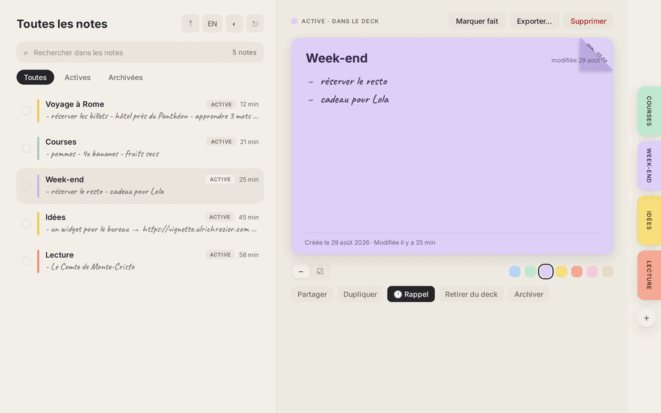

— sous toutes les coutures
Belle de jour, belle de nuit.
L'écriture est manuscrite, le papier est pastel, les animations sont physiques. C'est une app qu'on a envie de toucher.


Vignette transforme tes listes de choses à faire en post-its qui vivent dockés au bord de l'écran, se déplient d'une pichenette, se synchronisent en temps réel et se partagent avec les gens que tu aimes.
Open source · zéro pisteur · synchro < 1 s · tes données chez toi

↑ en direct : une pichenette, deux coches, et hop
— promesses tenues
Tout ce qu'un post-it fait sur ton frigo, en mieux, partout.
Tes notes vivent en onglets pastel sur le bord de l'écran et se déplient d'une pichenette, avec de vraies animations à ressort.
Coche un item sur ton téléphone, il se barre instantanément sur ton Mac. Aucun bouton « rafraîchir » n'a survécu à ce projet.
Invite qui tu veux sur une note, en lecture ou en édition. L'invitation arrive comme un petit post-it jaune, à accepter ou refuser.
Au premier lancement, l'app te demande où vivent tes notes : l'instance officielle, la tienne (une URL suffit), ou le mode local — zéro serveur, zéro compte.
Français par défaut, anglais en un clic, mode sombre où les post-its restent des post-its — et l'icône de l'app se choisit parmi sept couleurs dans les réglages.
Corne une note ou griffonne une heure à côté d'une tâche : le coin se plie, l'onglet frémit, la notification part pile à l'heure.
Importe tes listes Markdown, exporte en un clic, restaure depuis la corbeille, duplique, archive. Tes listes ne sont jamais prisonnières.
— sous toutes les coutures
L'écriture est manuscrite, le papier est pastel, les animations sont physiques. C'est une app qu'on a envie de toucher.
— bientôt partout
Une seule base de code (web, Tauri) pour macOS, Windows, Linux, iOS et Android — avec les post-its posés directement sur le bureau.


— l'icône
Le coin qui se décolle, la liste manuscrite, la coche du travail fait.
— à la maison
Docker, Node, et c'est tout. Tes notes dorment dans TON Postgres, sur TA machine — et les apps natives se branchent à ton instance avec sa seule adresse. Pas envie de serveur du tout ? Le mode local vit très bien sans.
Le dépôt contient tout : l'app, le serveur, les migrations, ce site.
Un script génère tes secrets, un docker compose démarre les cinq conteneurs (~450 Mo de RAM).
Le schéma s'applique, le front se construit, ta première note se docke au bord de l'écran.
# tout, en cinq commandes
git clone https://github.com/Ulrichfr/Vignette-App.git && cd Vignette-App
node supabase/scripts/gen-env.mjs
docker compose -f supabase/docker-compose.yml up -d
./supabase/scripts/apply-migrations.sh
pnpm install && pnpm build
— pas à pas
De la première note au serveur chez toi, tout est documenté dans le dépôt.
Créer un compte, écrire une première note, la docker au bord de l'écran et la marquer faite.
02.Un docker compose, un script de secrets, deux migrations : Vignette tourne sur ta machine, données comprises.
03.Inviter par email, choisir lecture ou édition, accepter une invitation et collaborer en temps réel.